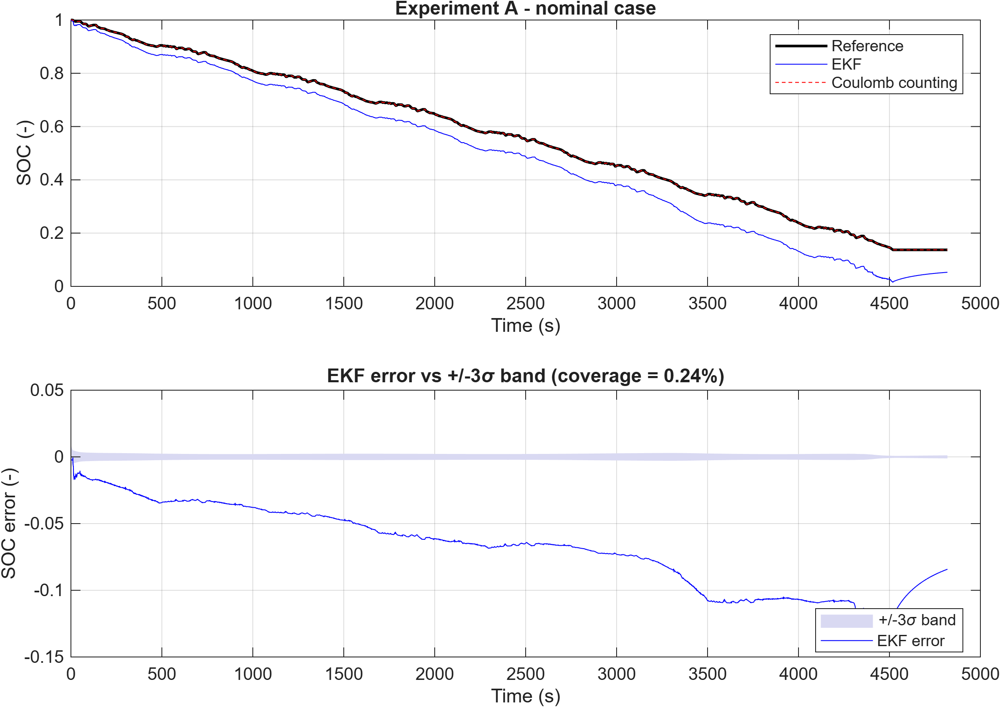
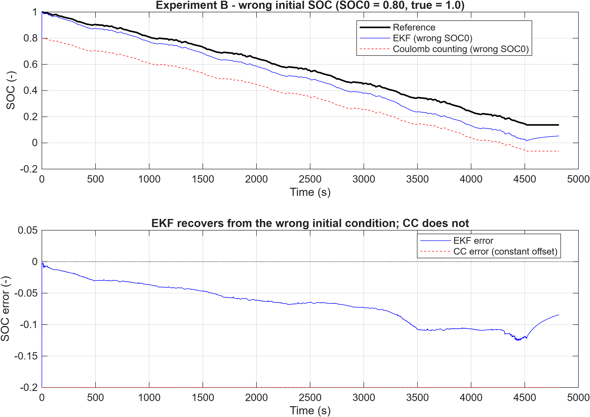
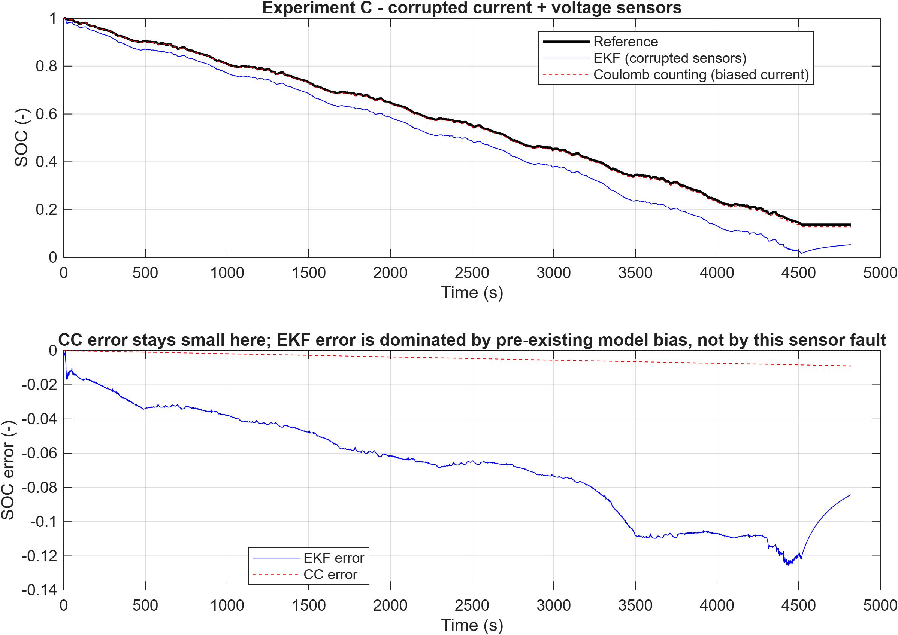
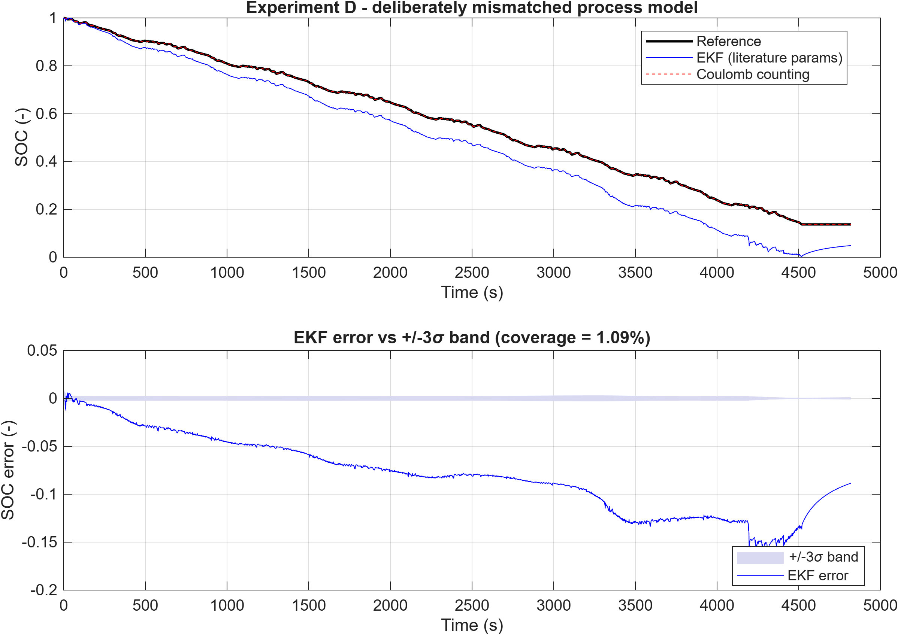
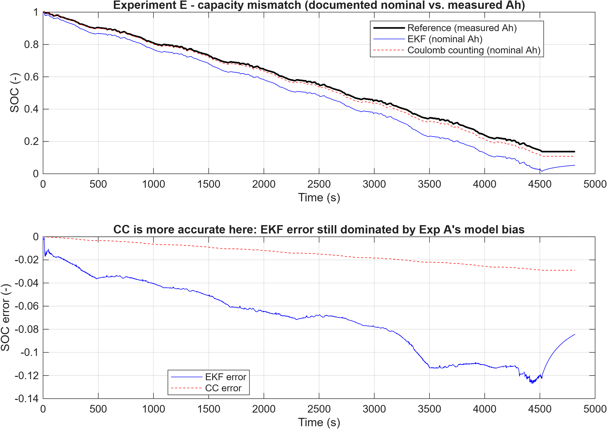

September 2026
A state-of-charge (SOC) estimator was built end-to-end for a real Panasonic NCR18650PF cell and benchmarked against plain Coulomb counting across five conditions: a nominal case plus four deliberately introduced faults. The cell was characterised from public C/20 OCV and HPPC pulse data, a 1-RC equivalent-circuit model (ECM) was identified from that data, and an Extended Kalman Filter (EKF) was built around it and re-implemented as a Simulink MATLAB Function block agreeing with the MATLAB reference to within 1e-9 SOC. The EKF is not a uniform improvement. It recovers from a wrong initial SOC, where Coulomb counting drifts to 20% error and cannot correct itself, but it loses under sensor noise and capacity mismatch, because its accuracy is bounded throughout by the ECM’s own +71.7 mV voltage-fit bias rather than by the filter recursion. That bias also explains a badly miscalibrated ±3σ band, and it was measured and reported instead of tuned away. Which estimator wins depends on the size of the fault relative to the model error underneath it.
A battery management system needs to know a cell’s state of charge (SOC) at every moment, but SOC can’t be measured directly — it has to be estimated from the current and voltage the system can actually read. The simplest approach, Coulomb counting (CC), just integrates measured current over time. It’s cheap, and it’s exact if its inputs are exact, but it has no way to correct itself: a wrong starting SOC, a biased current sensor, or a wrong assumed capacity all just accumulate as error forever. A model-based estimator can do better in principle because it also uses the terminal voltage. An Extended Kalman Filter (EKF) built on an Equivalent Circuit Model (ECM) combines a current-based prediction with a voltage-based correction at every sample [3, 4].
This project builds both estimators for a real Panasonic NCR18650PF cell and compares them under five conditions, all on real laboratory measurements and no synthetic cell data: a nominal case, plus four deliberately introduced faults (wrong initial SOC, corrupted sensors, a mismatched process model, and a wrong assumed capacity). The EKF doesn’t win every time, and that turned out to be the more interesting part of the project — working out when and why each estimator is more accurate, on one real cell and one real drive cycle, with every assumption stated explicitly.
All data come from the public Kollmeyer/Mendeley Panasonic 18650PF
dataset at 25 °C [1]: a C/20 (slow, near-equilibrium) full
discharge/charge cycle used to characterise capacity and open-circuit
voltage (OCV), and a US06 drive-cycle discharge record used to evaluate
the estimators. Discharge current is defined positive throughout
(I = -Current from the raw file), fixed once in
src/loadDataset.m so the sign convention can’t drift
between scripts.
Capacity. Right-endpoint, boundary-inclusive
integration of the C/20 discharge branch gives a measured capacity of
2.997 Ah, which lines up with the dataset’s own
Ah counter to within 0.01%. The commonly cited nominal
capacity for this cell is 2.9 Ah. The two values differ by about 3.2%,
and that gap is exploited on purpose later, in Experiment E.
Open-circuit voltage. OCV isn’t measured directly at
every SOC — it’s approximated from the low-rate (C/20) discharge and
charge branches, averaged together. The two branches don’t sit exactly
on top of each other (mean interior separation ≈ 44.7 mV), which is
rate-driven separation rather than modeled equilibrium hysteresis, but
averaging them is a reasonable way to split the difference. The averaged
101-point target (rested endpoints plus 99 interior branch means) is fit
with a degree-9 polynomial: RMSE 6.72 mV, maximum target error 22.27 mV,
across the full physical range SOC ∈ [0,1]. The
polynomial’s analytic derivative feeds the EKF’s measurement Jacobian
directly.
ECM parameters. Two independent 1-RC parameter sets were obtained: a literature-derived set (the 25 °C, SOC = 0.5 row of the same-cell first-order Thevenin table reported by Tang et al. [2]) and a set identified from this project’s own HPPC pulse data [5] (one bounded global least-squares fit over 64 qualifying pulses). Against the real US06 record, the HPPC-identified set fits noticeably better (bias +71.7 mV, RMSE 83.8 mV) than the literature set (bias +89.2 mV, RMSE 114.3 mV), so it’s used as the nominal model. The literature set is kept unmodified and repurposed later as a deliberately worse model, for Experiment D.
Equivalent Circuit Model. A 1-RC Thevenin model:
terminal voltage V = OCV(SOC) - V1 - R0*I, with
V1 the RC-branch voltage relaxing at time constant
tau = R1*C1. State update, using the actual (non-uniform)
sample interval dt_k and a right-endpoint timing convention
applied consistently across every function in the project:
SOC(k) = SOC(k-1) - (dt_k / Q_As) * I(k)
V1(k) = alpha_k * V1(k-1) + (1 - alpha_k) * R1 * I(k), alpha_k = exp(-dt_k/tau)Extended Kalman Filter. State vector
x = [SOC; V1]. The state transition itself is linear
(F = [1,0; 0,alpha_k]), but the measurement model
V(k) = OCV(SOC(k)) - V1(k) - R0*I(k) goes through the
nonlinear OCV(SOC) curve, which is why this is an EKF and
not a plain KF — the measurement Jacobian
H = [dOCV/dSOC(SOC_pred), -1] gets re-linearized around the
predicted SOC every step. Otherwise it’s the standard predict/update
recursion [3], with SOC clamped to [0,1] after each
update.
Three SOC trajectories are kept structurally separate throughout the codebase, as separate MATLAB functions with disjoint input contracts that never read each other’s outputs, so that no estimator can end up “seeing” the answer it’s being scored against:
SOC_ref — the reference trajectory, integrated from the
clean current only. This isn’t ground truth in the strict sense; SOC was
never directly measured on this record, so SOC_ref is
itself a protocol-supported assumption (SOC_ref(1) = 1),
not an independently verified quantity.SOC_CC — Coulomb counting, seeing only whatever current
(and initial SOC, and capacity) a given experiment assigns it, clean or
corrupted.SOC_EKF — the EKF, seeing whatever current and voltage
that experiment assigns it.All five experiments run on the same real US06 discharge record. Each one changes exactly one factor relative to Experiment A.
| Exp. | Condition | SOC_CC sees |
SOC_EKF sees |
|---|---|---|---|
| A | Nominal | clean I, correct SOC0=1, measured Ah | clean I & V, correct SOC0, HPPC params |
| B | Wrong initial SOC | SOC0 = 0.8 (true = 1.0) | same wrong SOC0 = 0.8 |
| C | Corrupted sensors | I with constant +0.02 A bias | biased I and V with 3 mV std noise |
| D | Mismatched process model | clean I (unaffected) | literature ECM params instead of HPPC |
| E | Capacity mismatch | documented nominal 2.9 Ah (true 2.997 Ah) | same wrong 2.9 Ah in its own state equation |
Accuracy is scored against SOC_ref with RMSE, MAE, bias,
and maximum absolute error (src/metrics.m); the EKF also
reports its ±3σ uncertainty band and the fraction of samples that
actually land inside it, as a check on how well-calibrated the filter’s
own confidence is.
| Experiment | Condition | EKF RMSE | CC RMSE | More accurate |
|---|---|---|---|---|
| A | Nominal | 7.4317% | n/a* | — |
| B | Wrong initial SOC | 7.3955% | 20.0% | EKF |
| C | Current bias + voltage noise | 7.4455% | 0.5157% | CC |
| D | Mismatched process model | 8.9161% | n/a** | — |
| E | Capacity mismatch | 7.7436% | 1.7294% | CC |
*In Experiment A, CC sees the same clean current used to build
SOC_ref, so the two integrate identically by construction.
Its error is zero as a matter of matched integration, which is a
consistency check and not a skill comparison. **Experiment D only
changes the EKF’s process model; CC is unaffected, so no comparison is
meaningful.
All five experiments above were run in MATLAB/Simulink and confirmed
against an independent Python cross-check of the same equations before
being reported; see docs/DECISIONS.md for the full evidence
trail.





Filter calibration. In every experiment, the EKF’s
±3σ band covers under 1.1% of samples (0.24% in Experiment A), far short
of the ~99.7% a well-calibrated filter should hit. Rather than patch
over it, the cause was tracked down: forward-simulating voltage from the
true SOC_ref with the HPPC parameters and comparing it to
the real measured voltage gives a residual of +71.7 mV bias, 83.8 mV
RMSE, and dividing that bias by the mean dOCV/dSOC over the
visited SOC range reproduces the observed EKF SOC bias almost exactly.
The filter’s reported uncertainty (P) only accounts for the
noise it was told about (Q, R) — it has no way
to know its own process model carries a real, un-modeled ~72 mV bias, so
it ends up more confident than it should be. Q was left
alone: inflating it would have swapped a traceable miscalibration for
one that merely looks better on paper.
The headline finding is not that the EKF wins. It is that the two estimators fail in different ways, and which one comes out ahead depends on how big the fault is relative to the ECM’s own model error.
Experiment B is the clearest case for the EKF. Coulomb counting has no mechanism to correct a wrong starting point, so its error sits at a constant 20 percentage points for the whole record, to numerical precision. The EKF, pulled by its voltage update at every step, recovers from the same −20% initial error down to a mean absolute error of about 9.3% over the back half of the record. It converges toward Experiment A’s own steady-state bias, not to zero, because the underlying ~72 mV model bias is still sitting underneath the recovery the whole time.
Experiments C and E go the other way, at least in this specific setup. A 0.02 A current bias, or a 3.2% capacity error, only produces a Coulomb-counting error of well under 2% — small, because the fault itself is small. Meanwhile the EKF’s error barely moves off its Experiment-A baseline (about 7.4% up to 7.4–7.7%), because that baseline is already dominated by the ECM’s own voltage-fit bias. Fusing in voltage doesn’t help much when the voltage measurement is already carrying a bigger error of its own than the fault being tested.
Experiment D isolates the process-model-quality question directly. Swapping in the weaker-fitting literature parameter set in place of the HPPC-identified one pushes RMSE from 7.43% up to 8.92% under otherwise identical clean-signal conditions, which is about as clean a demonstration as this project gets that EKF accuracy is bounded by ECM voltage-fit quality, and not by anything in the Kalman machinery itself.
Put together, an EKF earns its extra complexity specifically against faults Coulomb counting structurally can’t recover from, like a bad initial condition (and, by the same mechanism though untested here, a reset after a long unmeasured rest). It isn’t a strict improvement when the fault being defended against is small next to the estimator’s own model error — and in that regime, the added complexity doesn’t buy anything back.
SOC_ref(1) = 1 is a protocol-supported working
assumption (the US06 record has no observed rest at its start), not a
directly measured ground-truth anchor. That caveat applies to every
RMSE/bias number in this report, since all of them are measured against
SOC_ref.Built and evaluated on one real Li-ion cell and one real drive cycle, a 1-RC ECM/EKF SOC estimator was compared against Coulomb counting across five conditions. The EKF’s clearest advantage, guaranteed by how each estimator is structured, is recovering from a bad initial SOC, which Coulomb counting simply cannot do. Everywhere else, its accuracy is bounded by the underlying circuit model’s own voltage-fit quality (~72 mV local bias for the best parameter set available here). That number was measured and reported instead of tuned away, and it turned out large enough that for two of the five tested faults, the far simpler Coulomb-counting baseline was actually the more accurate estimator. The argument of this project is that trade-off, not a blanket claim that one estimator beats the other.
The ~72 mV bias that bounds this estimator is a property of the empirical circuit model, not of the filter. That distinction sets the direction of the remaining work. In a 1-RC ECM, capacity fade enters only as a parameter imposed from outside — which is exactly what Experiment E does — and never as a state the model itself can resolve, so degradation can be simulated here but not estimated. A reduced-order electrochemical formulation changes that: ageing mechanisms become observable quantities with physical meaning, which is the basis on which SOH and SOP estimation can rest rather than SOC alone. Establishing how much model fidelity that takes, and what it costs under embedded BMS constraints, is the natural continuation of the work reported here.
[1] Kollmeyer, P. (2018). Panasonic 18650PF Li-ion Battery Data. Mendeley Data, V1. https://doi.org/10.17632/wykht8y7tg.1
[2] Tang, A., Gong, P., Huang, Y., Wu, X., & Yu, Q. (2023). Research on pulse charging current of lithium-ion batteries for electric vehicles in low-temperature environment. Energy Reports, 9(Supplement 7), 1447–1457. https://doi.org/10.1016/j.egyr.2023.04.226
[3] Plett, G. L. (2004). Extended Kalman filtering for battery management systems of LiPB-based HEV battery packs: Part 3. State and parameter estimation. Journal of Power Sources, 134(2), 277–292.
[4] Plett, G. L. (2015). Battery Management Systems, Volume II: Equivalent-Circuit Methods. Artech House.
[5] Idaho National Engineering & Environmental Laboratory (2003). FreedomCAR Battery Test Manual for Power-Assist Hybrid Electric Vehicles. DOE/ID-11069.